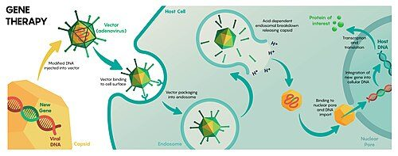

Treating the genetic cause
Many neurological diseases are caused by a faulty gene. For decades only their symptoms could be treated. Gene and RNA therapies aim to correct the problem at its source: replacing a missing gene, silencing a harmful gene or changing how it is read. Neurology has been one of the fields where they have reached patients fastest.
The types
| Type | How it works | Examples |
|---|---|---|
| Antisense oligonucleotides (ASOs) | Short strands of RNA or DNA that bind to messenger RNA and change how it is processed or destroy it | Nusinersen (SMA), tofersen (SOD1 ALS), eteplirsen and others (Duchenne) |
| RNA interference (siRNA) | Silences the messenger RNA of a gene | Patisiran, vutrisiran (transthyretin amyloidosis with neuropathy) |
| Splicing modifiers | Oral medicines that change how a gene is read | Risdiplam (SMA) |
| Viral gene therapy | A harmless virus (AAV) carries a healthy copy of the gene into cells | Onasemnogene abeparvovec (SMA), delandistrogene moxeparvovec (Duchenne), eladocagene exuparvovec (AADC deficiency) |
| Gene editing (CRISPR) | Corrects or inactivates the gene | In trials, for example in transthyretin amyloidosis |
Major successes
- Spinal muscular atrophy: nusinersen (2016), onasemnogene abeparvovec (2019) and risdiplam (2020) have turned the leading genetic cause of infant death into a treatable disease. The benefit is greatest if treatment starts before symptoms, thanks to newborn screening.
- Hereditary transthyretin amyloidosis: gene silencers halt or improve the neuropathy.
- ALS with a SOD1 mutation: tofersen reduces neurofilaments, a marker of damage, and may stabilise some patients, especially if started early.
- Aromatic L-amino acid decarboxylase (AADC) deficiency, a very rare childhood disease, with gene therapy implanted in the brain.
Under research
- Huntington's disease: ASOs and gene therapies to reduce huntingtin; in 2025 the AMT-130 therapy showed for the first time a slowing of the disease.
- Duchenne muscular dystrophy: new generations of exon skipping and gene therapies.
- Dravet syndrome, Friedreich's ataxia, spinocerebellar ataxias, Alzheimer's (ASOs against tau), Parkinson's due to LRRK2 or GBA1.
- Personalised "n-of-1" therapies: ASOs designed for a single patient with a unique mutation, such as milasen in 2018.
Challenges
- Reaching the brain: many require a lumbar puncture or surgery because they do not cross the blood-brain barrier.
- Price: some cost hundreds of thousands or more than a million euros per patient.
- Side effects: inflammation, liver involvement with some viruses, immune responses.
- Early genetic diagnosis: without knowing the mutation, it cannot be treated. See genetic testing in neurology.
Sources
- Finkel RS, et al. Nusinersen versus sham control in infantile-onset spinal muscular atrophy. N Engl J Med. 2017;377:1723-32.
- Miller TM, et al. Trial of antisense oligonucleotide tofersen for SOD1 ALS. N Engl J Med. 2022;387:1099-110.
- Adams D, et al. Patisiran, an RNAi therapeutic, for hereditary transthyretin amyloidosis. N Engl J Med. 2018;379:11-21.
- Kim J, et al. Patient-customized oligonucleotide therapy for a rare genetic disease. N Engl J Med. 2019;381:1644-52.
- Kulkarni JA, et al. The current landscape of nucleic acid therapeutics. Nat Nanotechnol. 2021;16:630-43.